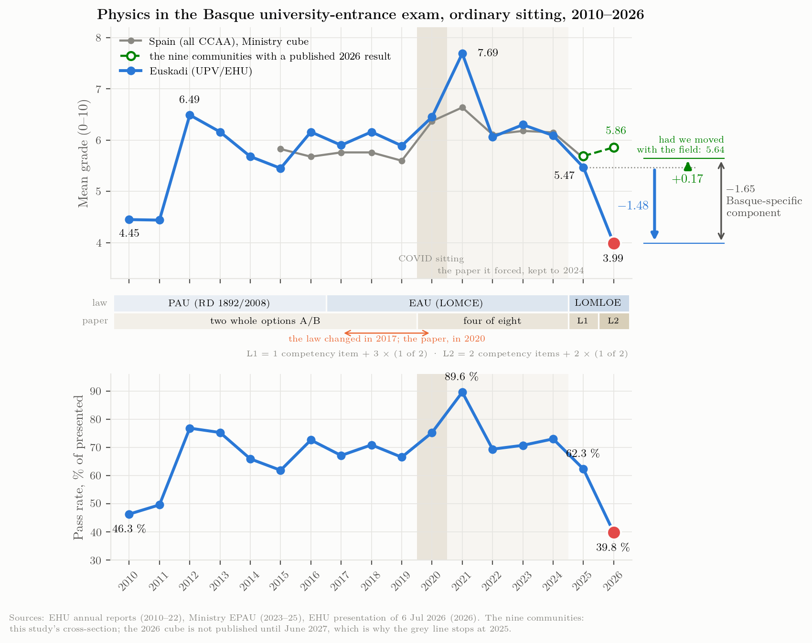
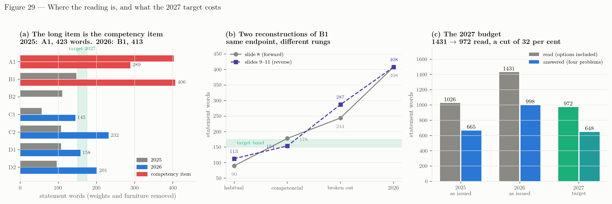

Síntesis para la coordinación
PAU Física, UPV/EHU: el terreno, el diagnóstico, la interpretación y lo que se sigue para 2027 — para la dirección de acceso y para el profesorado de Física de Bachillerato
Qué ha pasado. La media vasca de Física cayó a 3.99 en junio de 2026, desde 5.47 en 2025 y 6.09 en 2024. Es el valor más bajo de la serie de dieciséis años y la segunda caída consecutiva.
Cuánto de eso es nuestro. Medido contra las nueve comunidades que han publicado un resultado de 2026, 1.65 puntos de la caída son propios de Euskadi, y nada de la caída de 2025 lo era: en 2025 Euskadi se movió con el país con una diferencia de tres centésimas.
Cuánto de eso es de Física. Aproximadamente la mitad. Las ocho materias vascas, y las tres que también publicaron otras cuatro comunidades, dividen el cambio de forma exacta: \(-1.18\) movió a la vez a todas las materias cuantitativas de Euskadi — Matemáticas II cayó 1.67, más que Física — y \(-1.10\) es propio de Física.
Qué no podemos decir. Cuatro quintas partes de la caída específicamente vasca no pueden atribuirse a nada con los datos publicados, porque el contenido de la prueba, la carga de lectura, la severidad de la corrección y los temas examinados por primera vez dejan la misma huella en una media. Separarlos exige notas por subapartado, que la EHU tiene.
Qué cambia en 2027. Ni la estructura, ni los contenidos, ni la corrección. Cambia una sola cosa: los enunciados se acortan, de unas 1 430 palabras de lectura a unas 970, con los mismos verbos, la misma rúbrica y las mismas exigencias.
Qué pedimos. Tres cosas, por este orden: el recuento de penalizaciones de cuatro materias en 2025 y 2026 (obtenible en días, desde dentro de la universidad); las notas por subapartado de una muestra de exámenes de 2026; y la tabla por tribunal de Física.
Esta es la forma breve de un dosier más largo. Cada número remite a un capítulo suyo, y el capítulo va entre corchetes. Cuando una cifra es modelada y no observada, se dice en el sitio. Nada de esto es una estimación causal: son estadísticos de cohorte de pruebas distintas corregidas por tribunales distintos, y la prueba cambia todos los años. El argumento completo, con sus intervalos, sus contrastes fallidos y sus dos auditorías, está en el informe y en el capítulo 6.
El terreno
Qué datos hay
Cuatro cuerpos de evidencia, y conviene no mezclarlos.
Estadística oficial. Los cubos EPAU/SIIU del Ministerio dan, para cada comunidad y cada año de 2015 a 2025, la media, la tasa de aprobados y la distribución por bandas de cada materia. Son la única fuente en la que Euskadi y el resto de España se miden igual. El cubo de 2026 llega en junio de 2027, de modo que todas las cifras de 2026 de este dosier se han reunido una a una desde las universidades y los gobiernos autonómicos cap. 1.
Los resultados de 2026, nueve comunidades. Nueve de diecisiete han publicado una media de Física de 2026. Dos de ellas solo eran recuperables desde cuadros de mando que ningún buscador indexa. Las cifras vascas vienen de la presentación de la EHU del 6 de julio cap. 3.
Las pruebas. Cada ejercicio y opción de las dieciocho pruebas ordinarias de 2025 y 2026 de esas nueve comunidades — 146 ítems — se codificó con los criterios competenciales de la EHU, y una segunda persona repitió el trabajo a ciegas (\(\kappa = 0.76\) en la marca competencial). El archivo completo de la EHU desde 2010, 34 pruebas, se leyó del mismo modo cap. 11, cap. 12.
Un instrumento que aquí no corrige nadie. PISA mide a los mismos estudiantes a los quince años, en una escala fijada fuera del sistema vasco, y su ronda de 2025 se publicó el 8 de septiembre de 2026 cap. 6.
Lo que no hay es lo que resolvería la mayor parte de la discusión: notas por subapartado, por tribunal, de los exámenes de 2026.
Qué se ha hecho con ellos
Todo se recalcula desde los ficheros originales con scripts que cualquiera puede reejecutar; una ejecución limpia reproduce cada tabla byte a byte y cada figura píxel a píxel cap. 10. El dosier se ha auditado tres veces, por lectores que trabajaron solo con los ficheros. Cada auditoría retiró afirmaciones de la versión anterior, y las auditorías se publican con todo lo demás cap. 13. Esa es la razón para fiarse de los números que siguen, y también la razón para leer el apartado sobre lo que no establecen.
El diagnóstico
El tamaño, en tres marcos
| Marco | Qué pregunta | 2026 |
|---|---|---|
| Interanual | ¿cuánto cayó la media respecto de 2025? | \(-1.48\) |
| Contra la norma vasca prepandemia | ¿a qué distancia está 2026 de donde solemos estar? | \(-1.91\) |
| Contra el conjunto de las nueve | ¿cuánto es nuestro, descontado el movimiento del país? | \(-1.65\) |
Se separan menos de medio punto, de modo que nada de lo que sigue depende de la elección. El conjunto se usa para una sola cosa, y es una cosa que ningún número absoluto puede hacer: distinguir un año en el que cayeron todos de un año en el que caímos solo nosotros.
Una caída interanual de 1.48 es rara pero no inédita: siete de los 170 cambios interanuales del panel del Ministerio fueron igual de negativos. Lo excepcional es el nivel: 3.99 está por debajo de cualquier media autonómica en once años de datos ministeriales salvo Canarias 2019 cap. 2.
Tres sucesos, no uno

2024 cambió la forma y apenas tocó el nivel. La media se movió 0.21 — nada, en una serie cuya desviación típica interanual es 0.85. Pero la banda de 8 a 10 cayó nueve puntos donde el nivel predice tres, y la tasa de aprobados subió dos donde el nivel predice una caída de tres. Menos arriba, más justo por encima de la línea. Como movimiento de esa medida es el segundo más negativo de las 170 transiciones del panel nacional, y ocurrió en la última prueba del formato antiguo, un año antes de la primera prueba LOMLOE. Todas las pruebas de este dosier que trabajan sobre la media son ciegas a eso, y todas son correctas: una media no puede ver marcharse a los de arriba cuando llegan otros desde abajo.
2025 cambió el nivel, y el cambio fue del país. Euskadi perdió 0.62; el conjunto de las nueve perdió 0.65. Leído contra el conjunto, en 2025 no hay nada vasco.
2026 es nuestro. El conjunto ganó 0.17 y nosotros perdimos 1.48, de modo que el componente específicamente vasco es \(-1.65\), y está entero en un año.
De qué está hecho el 1.65

Euskadi publicó ocho materias y cuatro comunidades de comparación publicaron tres de las mismas, lo que da un panel equilibrado sobre el que el cambio se descompone de forma exacta, sin modelo alguno:
| Término | Puntos | Qué es |
|---|---|---|
| Base del conjunto | \(+0.06\) | lo que hicieron las tres materias comunes en las cuatro comparables |
| Prima de Física del conjunto | \(+0.74\) | Física por encima de la media de su comunidad, en las cuatro |
| Común de Euskadi | \(\mathbf{-1.18}\) | lo que movió a la vez a todas las materias cuantitativas vascas |
| Específico de Física | \(\mathbf{-1.10}\) | lo que queda para la prueba de Física |
Más de la mitad de lo que nos separa del conjunto no es de Física. En la misma convocatoria, en la misma universidad y bajo la misma especificación de corrección, Matemáticas II perdió 1.67 puntos — más que Física — mientras Química (\(-0.21\)), Biología (\(+0.15\)) y Lengua Castellana (\(+0.03\)) no acompañaban.
Dos consecuencias, y las dos son para la reunión y no para el dosier. Reescribir la prueba de Física ataca el \(-1.10\) y no puede tocar el \(-1.18\). Y el \(-1.18\) es invisible desde dentro de la ponencia de una materia: Física y Matemáticas II hay que mirarlas juntas, y solo la dirección puede convocar eso.
Lo que puede restarse y lo que no
| Componente | Puntos | Estado |
|---|---|---|
| Común al país | \(+0.17\) | observado |
| Elección retirada, neta de los recortes de las demás | \(-0.20\) | cuantificado (modelado) |
| Cohorte: descenso vasco de PISA en exceso sobre España | \(-0.12\) | cuantificado (modelado, una cota superior) |
| Contenido de la prueba y carga de lectura | — | no identificado (una señal vista dos veces) |
| Severidad de la corrección | — | no identificado |
| Severidad y dispersión por tribunal | — | no identificado |
| Temas examinados por primera vez | — | no identificado (acotado: optativos en junio) |
| Quién se examinó | — | no identificado (acotado, y va en sentido contrario) |
Dos componentes admiten un tamaño defendible, y los dos son pequeños: juntos \(-0.31\), menos de una quinta parte. Los \(-1.33\) restantes, cuatro quintas partes, no están atribuidos a nada. Eso es el hallazgo, no una laguna del trabajo: los cuatro candidatos dejan la misma huella en una media, y ningún trabajo adicional sobre agregados publicados los separará.
Las interpretaciones, y qué sostiene cada una
| Explicación | Veredicto | En qué se apoya |
|---|---|---|
| El modelo competencial | Describe 2025 como mucho; no explica 2026 | Se aplicó en las diecisiete comunidades los dos años; seis de nueve subieron en 2026 con él. 2025 fue además el final de una meseta presente en todas las materias, y no puede separarse de ella. |
| La prueba de 2026 | Compatible con todo; variable de primer orden | Se desplazó toda la distribución; el daño está en Física y Matemáticas II; es la única de las nueve que cambió de género, y en cuatro ejes a la vez; carga de lectura \(+45\) %; elección reducida a la mitad (vale \(-0.26\) por simulación). |
| Severidad de la corrección | Posible; el calendario encaja; acotada, no medida | 2026 es el segundo año de las penalizaciones y del componente lingüístico, y «cauteloso el primer año, pleno el segundo» predice exactamente el patrón \(+0.03\) / \(-1.65\). Pero una severidad general movería las ocho materias, y Lengua Castellana subió. Una severidad limitada a las siete penalizaciones numéricas encaja con el patrón y está confundida con el cambio de formato cap. 6. |
| Severidad por tribunal | Posible, no medida, reconocida por la EHU | El rector informó de variación significativa entre tribunales en Física; la presentación del 6 de julio dio rangos por tribunal de otras tres materias y no de Física. |
| Una cohorte más débil | Real fuera de la PAU, pequeña dentro | PISA muestra un descenso vasco de una década que la PAU solo ve en Física y solo desde 2025. Pero en 2026 se examinaron un 5.6 % menos de candidatos, de modo que la composición juega contra la caída, no a favor. |
| Las ponderaciones hacen prescindible la Física | Motor lento plausible, no un detonante de 2026 | Encaja con una erosión lenta, no con una caída de punto y medio. |
| Sesgo de lengua o de red | Sin evidencia en ningún sentido para Física | Solo se hizo el análisis de Euskara II. |
Dos cosas que preguntarán en la reunión
«¿Fue el alumnado?» En parte, y menos de lo que parece. La puntuación vasca de ciencias de PISA cayó 21 puntos entre 2022 y 2025, y eso es real y medido fuera de nuestro sistema. Convertido a la escala de la PAU vale alrededor de un quinto de punto al año — frente a una variación interanual de prueba a prueba de 0.85 puntos. Y no hay una tasa que proyectar: la variación de PISA por año de cohorte va de \(+3.7\) a \(-7.5\), una sucesión de escalones y no una pendiente, de modo que una extrapolación lineal sería un intervalo honesto alrededor del modelo equivocado cap. 6.
«¿Fue la corrección?» No en el sentido de que el profesorado corrector se volviera más duro con la misma escala. Lo que cambió es el régimen. Hasta 2025, una unidad ausente costaba la parte del subapartado que dependía de ella: el corrector no la otorgaba. Desde 2026 la misma omisión cuesta esa parte y \(-0.10\), sin tope; una segunda clase de defecto (claridad, terminología, coherencia, uso correcto de teoremas y constantes) tenía en 2025 una regla que no se aplicaba y en 2026 se aplicó; y un error grave anula el apartado entero. Las reglas apenas cambiaron; lo que cambió es que se desplegaron por completo, por consenso alcanzado con el profesorado corrector en la reunión previa a la convocatoria.
Los importes de las penalizaciones están documentados en los criterios de 2026. Que se aplicaran en su totalidad en 2026 y no en 2025 es el relato del coordinador, no un documento — una reunión colectiva, convocada y con asistencia de todo el profesorado corrector, de modo que cualquiera de ellos podría confirmarlo o desmentirlo, pero testimonio mientras no se recuperen su orden del día y los criterios repartidos.
Tomado como se describe, basta. Si se pasa la distribución publicada de 2025 por ese régimen — unas doce penalizaciones de \(0.10\) por ejercicio, un error grave que se lleva parte del examen en uno de cada seis, y prácticamente todo el examen en un tres o cuatro por ciento —, las cuatro cifras publicadas de 2026 salen juntas: media 4.11 frente a 3.99, aprobados 39.0 % frente a 39.8, una cuarta parte de los ejercicios en 2 o menos frente al 24.5 %, y un 3.5 % en cero frente al 3.2 % cap. 6.
Tres advertencias van con eso. Es suficiencia, no prueba: esas cuatro cifras se ajustaron, no se predijeron. El número sólido es el de penalizaciones — doce en todas las variantes del modelo probadas —, mientras que las proporciones de anulación son un orden de magnitud y no una estimación. Y el modelo falla en la única cifra a la que no se ajustó: alrededor del 2.1 % de los ejercicios de 2026 sacaron nueve o más, y doce penalizaciones repartidas por igual topan el examen en torno a 8.8, de modo que el modelo casi no deja a nadie ahí. El régimen real no pudo golpear al mejor trabajo tan fuerte como al resto — algo que el recuento puede comprobar directamente, cruzando penalizaciones por ejercicio con la nota del ejercicio.
Los tres números que lo zanjarían están en las hojas de corrección: penalizaciones por ejercicio, proporción de ejercicios con algún apartado anulado y cuánto se anuló en ellos.
La tabla de materias acota una versión distinta de la hipótesis, y la sigue acotando: si los tribunales se hubieran vuelto más severos en general, Lengua Castellana y Euskara II lo mostrarían tan claramente como Física, y Lengua subió. El régimen descrito aquí alcanza al trabajo numérico, es decir a Física, Química y Matemáticas II — y Química cayó solo 0.21, algo que el mismo recuento tendría que explicar.
Lo que no puede decirse
Este apartado existe porque una reunión sobreinterpreta un dosier que no lo tenga.
- No podemos decir que la prueba causó la caída. La prueba es la variable de primer orden y la evidencia es compatible con ella; no es lo mismo.
- No podemos separar una prueba más difícil del nuevo régimen de corrección. Dentro de los modelos probados, el régimen ajusta bastante mejor las cuatro cifras — una resta uniforme amontona un 7.8 % de los ejercicios en cero frente al 3.2 % observado —, pero una prueba más difícil de forma desigual no se ha probado y podría ajustar. En todo caso llegaron juntos: en el mismo junio, en la misma comunidad y, en B1, en el mismo subapartado, donde un requisito daba puntos si se cumplía y \(-0.10\) si no.
- No podemos decir qué es el \(-1.18\). Es mayor que el término específico de Física y nada en este dosier lo aísla.
- No podemos clasificar 2026 como desplazamiento o como cambio de forma, porque la EHU no ha publicado la distribución. Las dos cohortes canarias que sí la publican, casi a nuestro mismo nivel, son desplazamientos puros.
- No podemos decidir si 2024 y 2026 son un mecanismo o dos. Una compresión de la parte alta en 2024 y un desplome del nivel en 2026 son igualmente compatibles con un único cambio lento en lo que premia la corrección y con dos sucesos inconexos.
- No podemos proyectar 2027. El término de cohorte es un quinto de punto; la prueba vale cinco veces eso.
Qué cambia en 2027 y qué no
Para el profesorado, en una tabla
| 2026 | 2027 | |
|---|---|---|
| Estructura | cuatro problemas, \(2.50\) cada uno | sin cambios |
| Optatividad | problemas 1 y 2 obligatorios; 3 y 4 con opción a o b | sin cambios |
| Contenidos | los cuatro bloques de saberes básicos | sin cambios |
| Rúbrica | tres apartados por problema; subapartados de \(0.25\) y \(0.50\) | sin cambios |
| Criterios de corrección | simbólico primero; descuentos de \(-0.10\); errores graves anulan el apartado; componente lingüístico de \(0.2\) | sin cambios |
| Datos y constantes | una tabla para todo el examen, con distractores | sin cambios |
| Longitud del enunciado | unas 1 430 palabras leídas, 998–1 128 respondidas | ≈ 1 100 leídas: ejercicios competenciales ≤ 250 palabras, optativos ≤ 150 |
Más corto no es más fácil. Los verbos, los niveles y la rúbrica son los mismos; lo que se va es la narrativa, la repetición entre apartados y las instrucciones de formato que los criterios de corrección ya recogen.
Dónde está realmente la lectura

Dos hechos que solo aparecen al contar la prueba ítem a ítem, y que cambian lo que «más corto» tiene que significar.
La longitud vive en los ejercicios competenciales, y ya vivía ahí en 2025. En 2025 seis enunciados iban de 56 a 147 palabras y el séptimo — A1, el único ejercicio competencial obligatorio — tenía 403. En 2026 hay dos ejercicios así, A1 con 289 y B1 con 406, y entre los dos suman la mitad de todo lo que lee un candidato.
Cien palabras de la prueba no son preguntas, y son nuevas. La de 2026 imprime el peso de un apartado o subapartado cincuenta y una veces, 103 palabras; la de 2025 no imprimía ninguno, y llevaba solo el global «2.5 puntos» en las instrucciones. La rúbrica granular es una mejora; imprimirla cincuenta y una veces dentro del texto corrido no es la única manera de darla, y una columna al margen no costaría nada de leer.
La trayectoria, y por qué el presupuesto necesita dos niveles. Un ejercicio competencial cuesta unas 400 palabras en su primer año y unas 300 en el segundo. No es una conjetura: el bloque A entró en la forma competencial en 2025 con 403 palabras y en 2026 tuvo 289; el bloque B entró en 2026 con 406, la misma cifra que el primer año de A. El objetivo para ambos en 2027 son 250, y A ya ha recorrido casi todo ese camino por sí solo.
| Bloque | primer año | segundo año | objetivo 2027 |
|---|---|---|---|
| A · gravitatorio | 403 (2025) | 289 (2026) | 250 |
| B · electromagnético | 406 (2026) | 250 (2027) | 250 |
Leído así, 2026 no es una prueba que saliera mal: es una prueba que lleva un bloque a 400 y otro a 300 el mismo año, que es lo que cuesta la transición cuando los bloques entran de uno en uno.
Pero 250 para los competenciales y 150–175 para todo lo demás no caben en una sola banda uniforme. Dos competenciales a 250 y cuatro optativos a 150 dan 1 100 palabras leídas, un recorte del 23 % desde 1 431 — no las 972 que daría una banda uniforme. Llegar a 972 exigiría los optativos a 118, y no deberían bajar tanto: son los siguientes bloques que entrarán en la forma competencial, y cada palabra que se les quite ahora habrá que devolvérsela entonces. Por eso el presupuesto se enuncia mejor en dos niveles — competenciales hasta 250, optativos hasta 150 — con unas 1 100 como comprobación de la prueba entera.
Las cuatro versiones del problema 2, y qué enseñan
El problema electromagnético de 2026 es el enunciado más largo de la prueba. Su estructura es exacta y se ha contrastado con la prueba línea a línea: tres cálculos habituales pedidos dos veces, uno por configuración, y tres elementos competenciales pedidos una vez. El relato de la coordinación sobre por qué — que el bloque B entraba por primera vez en el paradigma competencial y que por eso la prueba explicaba, repetía y preguntaba a la manera habitual, para que las exigencias competenciales pesaran menos — es testimonio del autor de la prueba, no un hecho verificado, y procede de una presentación de la que el autor de este dosier es coautor. Nada de lo que sigue depende de que ese relato sea correcto.
La coordinación ha reconstruido el problema en otras formas — posibles mejoras, no un veredicto sobre lo que debió hacerse — por dos rutas distintas que solo comparten el punto final. Hacia adelante, desde un enunciado escrito a propósito a la manera anterior a la competencial: 90 → 178 → 244 → 408 palabras. Hacia atrás, desde lo que salió: 408 → 287 sin la narrativa, 154 en la forma comprimida que el modelo competencial permite, y 113 escrito como se examinaba el bloque antes del requisito competencial, con las configuraciones dibujadas en vez de descritas. Ese último contraste es el útil: el estilo antiguo regalaba la geometría en un esquema, y la forma competencial tiene o bien que devolverla a palabras o bien que pedir que la dibuje el alumnado, lo que cuesta dieciséis palabras y convierte un regalo en un elemento competencial.
Se siguen tres cosas para 2027, y la primera cambia lo que se evalúa y no solo lo que se lee.
- Andamiar una vez, no dos. Primero una cautela: b) y c) no son el mismo cálculo. La configuración I es una espira fija en un campo que varía como \(3t^2\); la II es una espira que gira en un campo constante. La física, la derivada y los números son distintos. Lo que se repite es la estructura de la petición — escribe \(\Phi(t)\), deduce \(\varepsilon(t)\), evalúa en \(t\) —, pedida dos veces, subapartado a subapartado. Gástese una sola vez: desglosar la cadena en la configuración I y comprimirla en la II, de modo que la segunda vez el alumnado ponga los pasos intermedios en una situación genuinamente distinta. Eso es un aumento real de exigencia, no un ahorro disfrazado. No tiene longitud medida, porque no es ninguna de las versiones reconstruidas: queda entre 154 y 287, más cerca de la primera. Esta y la versión con figura son dos candidatas, no una recomendación, y se compran distinto: el dibujo gana espacio sin cambiar lo que se evalúa; la asimetría lo gana pidiendo más.
- Los criterios transversales, fuera del enunciado en 2027. «Expresa el resultado en notación científica y con dos decimales» no es ninguno de los cuatro niveles: pertenece al saber básico A, el transversal, y se aplica a toda respuesta numérica esté impreso o no. En 2026 se imprimió, con puntos asignados, porque era el primer año en que se examinaba explícitamente y la intención era avisar al alumnado de que contaba. Eso fue andamiaje, y no se repetirá: desde 2027 el criterio se aplica desde la rúbrica, donde siempre estuvo. Lo que costó en 2026 fueron palabras, y un subapartado en el que el mismo requisito daba puntos si se cumplía y \(-0.10\) si no.
- El contexto, como datos; el montaje, dibujado. El contexto de 2026 ocupaba 156 palabras y dice lo mismo en 76; sustituir las dos descripciones en prosa de las configuraciones por dos diagramas ahorra cuarenta más. Y si la geometría es lo que se quiere evaluar, pídase el dibujo en vez de imprimirlo: dieciséis palabras, y pasa a ser un elemento competencial.
Qué significa esto en el aula
Nada de la preparación cambia por la longitud. Hay cuatro cosas que conviene decir igualmente, y las cuatro están en la evidencia de 2026.
El temario está abierto. Durante quince años la física moderna fue el efecto fotoeléctrico: 14 de los 15 problemas planteados entre 2010 y 2024. Los espejos se plantearon por primera vez en junio de 2025; las ondas estacionarias con niveles sonoros y la datación por carbono-14, en junio de 2026; un espectrómetro de masas, en julio de 2026. Hay que preparar los bloques tal como están publicados, no las plantillas históricas cap. 12.
Las penalizaciones se cuentan. Unidades, una flecha de vector que falta o que sobra, redondeo intermedio por encima del 5 %, un prefijo del SI equivocado, un factor de diez, un error de transcripción: \(-0.10\) cada una, más \(0.2\) por gramática, ortografía y presentación en las respuestas escritas. Cinco de ellas son medio punto, y son baratas de evitar.
Simbólico primero, numérico después. Es un criterio de corrección, no una preferencia de estilo, y además protege a quien se examina: un resultado simbólico correcto se puntúa aunque luego falle la aritmética.
La tabla de constantes trae distractores. Once entradas en 2026; ocho se usaron y tres nunca. Elegir entre ellas es parte de lo que se evalúa.
Qué pedimos, y a quién
Ordenado por lo que resolvería cada cosa, no por lo fácil que sea.
- El recuento de penalizaciones de 2025 y 2026 en Física, Matemáticas II, Lengua Castellana y Euskara II. Cuatro cuentas: cuántos ejercicios perdieron los \(0.2\) del componente lingüístico; cuántos descuentos de \(-0.10\) por ejercicio, por tipo; cuántos ejercicios tuvieron al menos un apartado anulado por error grave; y cuántos apartados se anularon en esos ejercicios. El modelo dice que el resultado de 2026 se reproduce con unas doce penalizaciones por ejercicio y un error grave en uno de cada seis que se lleva el 85 % del examen: el recuento encuentra esos números o no. Es la petición decisiva más barata y la única obtenible en días: no recoge nada nuevo, las materias ya están corregidas y puede responderse desde dentro de la universidad.
- Notas por subapartado de una muestra estratificada de exámenes de 2026 (unos 300, repartidos entre tribunales). Separa los cuatro componentes no atribuidos a la vez. Hágase primero en B1, y antes que ninguna otra, una comparación: los tres subapartados de b) frente al primero de c), por punto. Los dos son la misma cadena de tres pasos en otra configuración, de modo que si la repetición funcionó como el andamiaje que pretendía ser, c)1 puntúa por encima de b)1–3; si fue un impuesto de tiempo sobre el enunciado más largo de la prueba, por debajo. Los apartados no deben compararse enteros: la mitad de c) es un subapartado de valoración sin análogo en b).
- Física por tribunal, 2025 y 2026. La EHU lo calculó y publicó el equivalente de otras tres materias. Separa la severidad por tribunal, y muestra si lo visible en 2026 ya se gestaba en 2025.
- El histograma completo de Física de 2024 a 2026, en bandas de un punto y con los recuentos de ceros y dieces.
- La elección por opción en 2026, y la media de cada una.
- Física de julio de 2026: presentados, aprobados, media. Estadísticas de revisión de Física 2026.
- Nota escolar y nota de PAU, emparejadas, de las últimas cinco cohortes. El único instrumento disponible para lo que una cohorte gana o pierde entre los quince y los dieciocho.
- Las pruebas y los criterios de 2026 de las demás comunidades, y el texto que fija los criterios estructurales a escala nacional, si existe. Mientras no se resuelva, la comparación con las nueve es una comparación y no un control.
- El acta de la reunión con el profesorado corrector previa a la convocatoria de 2026: orden del día, asistencia y el documento de criterios que se repartió. No cuesta nada recuperarlo, y es lo que convierte el relato del cambio de régimen en registro.
Las peticiones 1, 2 y 3 las ha de cursar la dirección ante la EHU. Nada del diseño de la prueba de 2027 depende de ellas; la elección entre remedios, sí.
Qué hay que decidir, y cuándo
| Quién | Para cuándo | |
|---|---|---|
| El presupuesto de palabras y las cinco reglas | la coordinación de Física | antes de que salgan las instrucciones a los centros |
| Leer Física y Matemáticas II juntas | la dirección de acceso | en cuanto pueda convocarse |
| Petición 1, el recuento de penalizaciones | la dirección, ante la EHU | ya: es una semana de trabajo |
| Peticiones 2 y 3 | la dirección, ante la EHU | antes de escribir la prueba de 2027, si han de informarla |
| Registrar los parámetros de la prueba antes de la convocatoria | la coordinación | al fijarla |
| Pilotaje, doble corrección, horario | la dirección | decisiones de presupuesto y calendario |
La única recomendación que no cuesta nada y lo cambia todo en la interpretabilidad de 2027: registrar los parámetros de la prueba antes de la convocatoria — longitud del enunciado por problema, proporción competencial, proporción optativa, reglas de penalización, temas examinados — y leer el resultado contra ellos. Sea cual sea el resultado de 2027, será entonces una medida y no otra discusión.
Fuentes
Todo lo anterior está en el dosier, y cada cifra suya puede rastrearse hasta una URL, una página o un filtro de cuadro de mando cap. 8. La historia del propio dosier, incluidas las tres auditorías y todo lo que retiraron, está en el capítulo 13. El análisis del enunciado se apoya en la presentación de coordinación del 18 de septiembre de 2026 (USaP Física 2027, Arretxe, López-Eiguren e Igartua), cuyas diapositivas 8 a 11 reconstruyen el problema electromagnético de 2026 por dos rutas. Sus recuentos de palabras y los de este estudio coinciden con menos de un tres por ciento de diferencia en el total de la prueba, y entre el uno y el seis por ciento ítem a ítem. El autor de este dosier es coautor de esa presentación, razón por la cual su relato de diseño se trata aquí como testimonio y sus recuentos se han recalculado desde la prueba archivada.